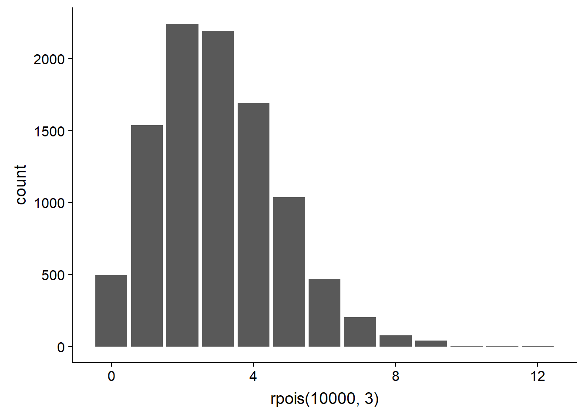
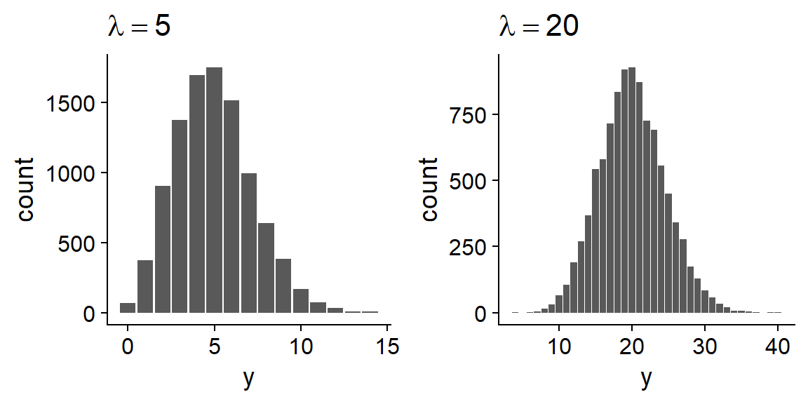
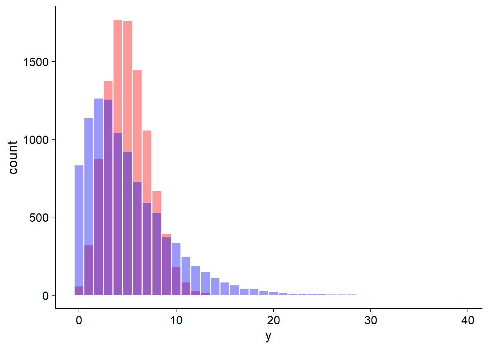
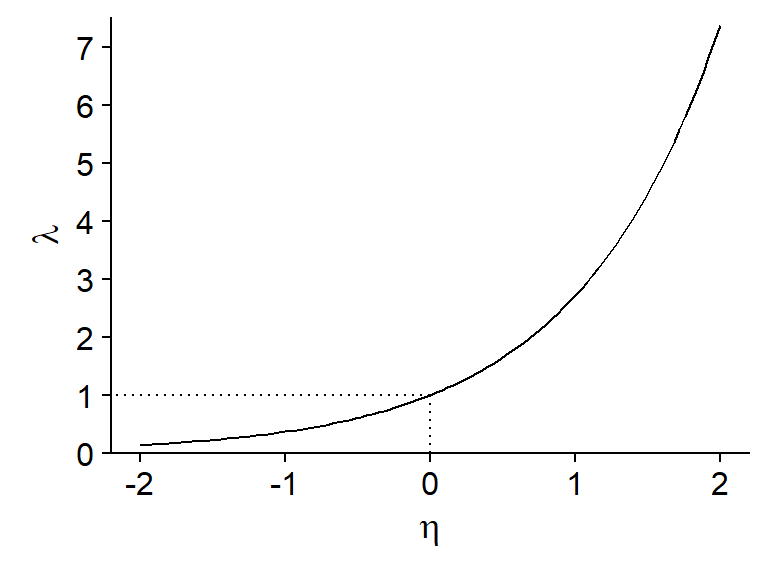
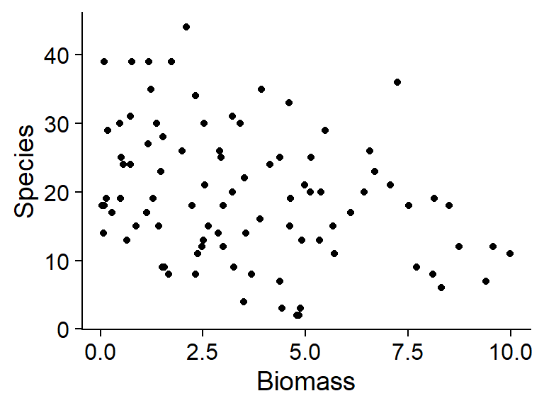
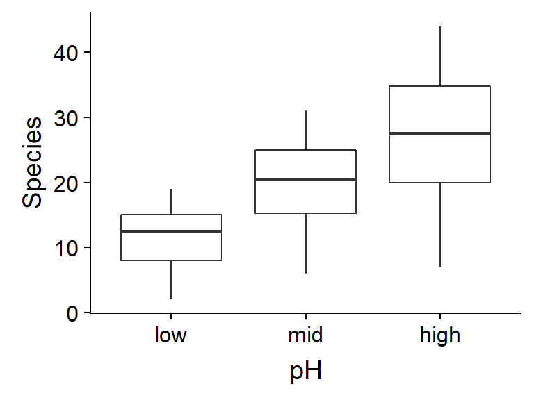
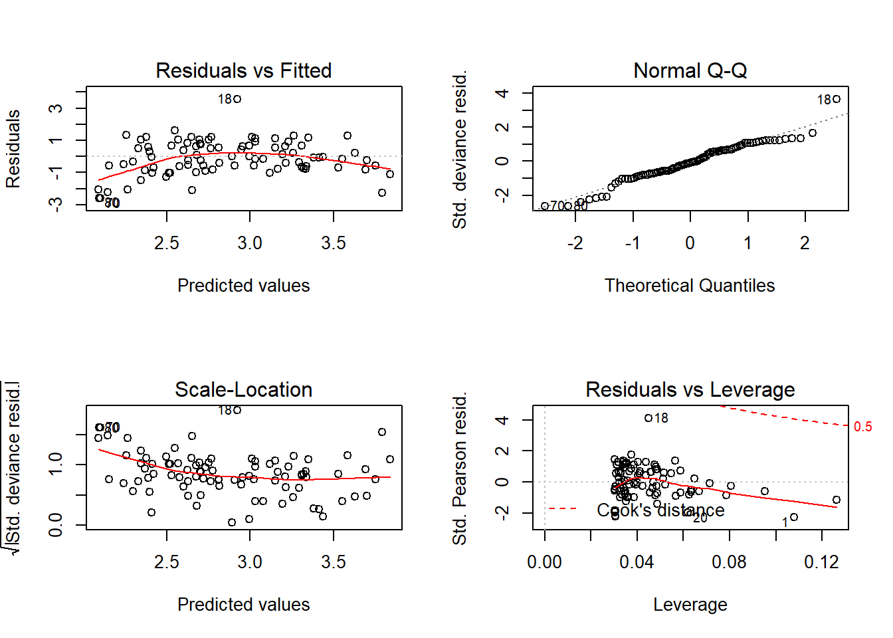
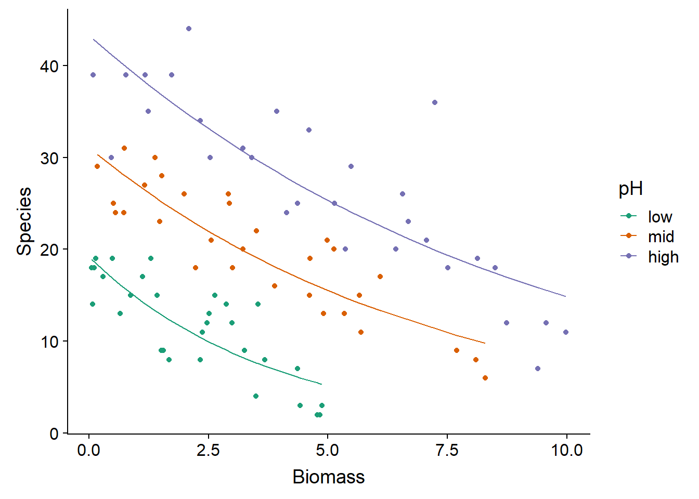
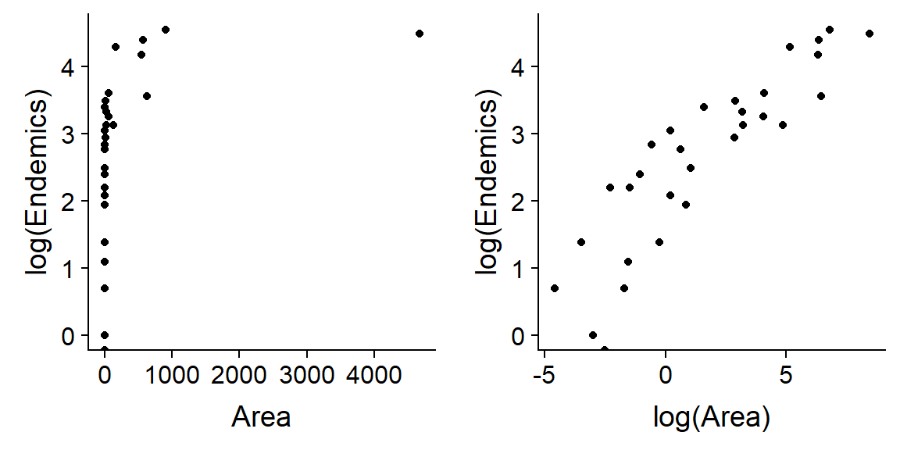

Régression de Poisson
9 novembre 2020
Objectifs
Savoir quand et comment utiliser un modèle linéaire généralisé avec distribution de Poisson.
Détecter la surdispersion dans un modèle linéaire généralisé.
Adapter l’estimation de paramètres et la sélection de modèles au cas de modèles surdispersés.
Introduction
Au dernier cours, nous avons appliqué la régression logistique à l’analyse de données binaires et binomiales. Dans ce cours-ci, nous verrons un autre type de modèle linéaire généralisé, la régression de Poisson, qui sert à modéliser le nombre d’observations d’un certain événement dans une unité d’échantillonnage définie.
Voici quelques exemples de ce type de données en écologie:
- le nombre de semis d’une espèce dans plusieurs quadrats;
- le nombre d’espèces (richesse spécifique) observé sur différents sites;
- le nombre d’individus d’une espèce d’oiseau entendus dans un certain laps de temps lors de différentes visites à un site.
Ou dans d’autres domaines:
- le nombre de patients arrivant à l’urgence par heure;
- le nombre de voitures traversant une intersection par minute.
Propriétés des données de comptage
Les données de comptage sont des nombres discrets \(\ge\) 0; on peut avoir 0, 1, 2, … observations, mais pas -1 ou 1.5.
Lorsque le nombre moyen d’observations est petit, la distribution des observations est généralement asyémtrique (ex.: si la moyenne est de 1, certains sites en auront plus que 2, mais jamais sous 0).
La variance du nombre d’observations tend à augmenter avec la moyenne: par exemple, si on observe en moyenne 1 espèce de champignon par placette de 10x10m, les observations varieront peut-être entre 0 et 3, mais si on en observe en moyenne 10, les observations pourraient varier entre 6 et 15.
Ces propriétés justifient l’utilisation d’une distribution différente de la normale pour modéliser la réponse observée: la distribution de Poisson.
Distribution de Poisson
Supposons que la réponse \(y\) représente le nombre d’observations d’un événement dans un intervalle donné (intervalle de temps, de longueur, de surface, etc.). Supposons de plus que ces événements sont indépendants, c’est-à-dire que l’observation d’un premier événement n’influence pas la probabilité d’en observer ou non un deuxième.
Dans ce cas, la variable \(y\) suit une distribution de Poisson, avec un paramètre \(\lambda\) représentant le taux moyen d’observations par intervalle. La probabilité d’une certaine valeur de \(y\) en fonction de \(\lambda\) est donnée par l’équation suivante.
\[ P(y | \lambda) = \frac{\lambda^y}{y!} e^{-\lambda} \]
La distribution de Poisson n’a qu’un paramètre: \(\lambda\) correspond à la fois à sa moyenne et à sa variance (donc l’écart-type est \(\sqrt{\lambda}\)).
Dans R, la fonction rpois permet de générer des données suivant une distribution de Poisson et dpois donne la probabilité d’une valeur de \(y\) donnée selon l’équation ci-dessus.
# Diagramme à barres de 10000 valeurs aléatoires tirées
# de la distribution de Poisson avec lambda = 3
ggplot(NULL, aes(x = rpois(10000, 3))) +
geom_bar()
# Probabilité d'obtenir y = 1 si lambda = 3
dpois(1, 3)## [1] 0.1493612Comparaison avec la distribution binomiale
Pour la distribution binomiale, nous avions une réponse positive ou négative pour chaque individu (ou unité d’échantillonnage) et nous essayions de prédire la probabilité d’une réponse positive \(p\).
Dans la distribution de Poisson, la réponse est le nombre d’observations par unité d’échantillonnage et nous essayons de prédire la moyenne de ce nombre.
Si on a une réponse binomiale qui est rare au niveau individuel (\(p\) est petit) et que la population \(n\) est grande, alors on peut modéliser le nombre de cas au niveau de la population par une distribution de Poisson avec \(\lambda = np\).
Exemple: Nous étudions une forêt de bouleaux où le chaga est présent sur une petite proportion (ex.: ~1%) des arbres. Au lieu de compter les bouleaux affectés et non-affectés par le chaga, on pourrait seulement compter le nombre de chancres de chaga dans des placettes de taille donnée et modéliser ce nombre avec une distribution de Poisson.
Comparaison avec la distribution normale
Lorsque \(\lambda\) est assez grand, la distribution de Poisson devient plus symétrique et tend vers une distribution normale.

Autrement dit, si le nombre moyen est assez grand, le nombre d’observations se comporte presque comme une variable continue suivant une distribution normale avec \(\mu = \lambda\).
Dans ce cas, la régression linéaire pourrait s’appliquer. Toutefois, il faut se rappeler que les deux modèles font différentes suppositions au sujet de la variance de la réponse. Dans le modèle de régression linéaire, la moyenne \(\mu\) dépend des prédicteurs, mais la variance \(\sigma^2\) est constante. Dans le modèle de régression de Poisson, la moyenne et la variance dépendent des prédicteurs, parce qu’elles sont toutes deux égales à \(\lambda\). Il faudra donc observer les graphiques de résidus pour déterminer quel modèle est le plus approprié.
Indépendance des observations et surdispersion
Tel que mentionné plus haut, la distribution de Poisson suppose l’indépendance des observations individuelles. Il est rare que cette condition soit parfaitement respectée dans la nature. Par exemple:
- la probabilité d’observer un semis d’une espèce augmente à proximité d’autres semis (agglomération) si les semences sont dispersées en groupes près du parent;
- l’observation d’une espèce sur une placette affecte la probabilité d’en observer d’autres en fonction des relations de compétition ou de facilitation entre ces espèces.
Le non-respect des suppositions de la distribution de Poisson peut notamment mener à une surdispersion des observations, c’est-à-dire qu’on observe plus de valeurs extrêmes que prévu par le modèle de Poisson. Dans le premier exemple ci-dessus, l’agglomération fait qu’on a davantage de placettes avec 0 semis et davantage de placettes avec un grand nombre de semis.
Dans le graphique ci-dessous, les barres en rouge suivent une distribution de Poisson tandis que celles en bleu représentent un cas de surdispersion. La moyenne de \(y\) est de 5 dans les deux cas.

Nous verrons plus loin comment identifier et traiter les cas de surdispersion.
Régression de Poisson
La régression de Poisson est un modèle linéaire généralisé où la réponse \(y\) suit une distribution de Poisson:
\[ y \sim Pois(\lambda) \]
Puisque \(\lambda\) doit être un nombre positif, nous utiliserons la fonction de logarithme comme lien avec le prédicteur linéaire.
\[ \log{\lambda} = \eta = \beta_0 + \sum_{i = 1}^m \beta_i x_i \]
Selon les propriétés de la fonction log, une valeur de 0 du prédicteur \(\eta\) correspond à \(\lambda = 1\), une valeur positive correspond à \(\lambda > 1\) et une valeur négative à \(\lambda < 1\).

En inversant le log, on obtient une relation exponentielle entre la réponse moyenne \(\lambda\) et les prédicteurs:
\[ \hat{y} = \lambda = e^{\beta_0 + \sum_{i = 1}^m \beta_i x_i} \]
Puisque l’addition de puissances correspond à une multiplication, ce modèle correspond à des effets multiplicatifs des prédicteurs sur la réponse.
\[ \hat{y} = e^{\beta_0} e^{\beta_1 x_1} e^{\beta_2 x_2} \ldots \]
Le logarithme est la fonction de lien par défaut pour la régression de Poisson. Pour bien interpréter les résultats de la régression, il faut se rappeler qu’une transformation logarithmique est appliquée à la réponse moyenne.
Résumé des modèles linéaires généralisés vu dans ce cours
| Modèle | Distribution | Lien par défaut | Inverse du lien |
|---|---|---|---|
| Régression linéaire | Normale: \(y \sim N(\mu, \sigma)\) | Identité: \(\mu = \eta\) | \(\mu = \eta\) |
| Régression logistique | Binomiale: \(y \sim B(n, p)\) | Logit: \(\log(p/(1-p)) = \eta\) | \(p = 1/(1+e^{-\eta})\) |
| Régression de Poisson | Poisson: \(y \sim Pois(\lambda)\) | Log: \(\log(\lambda) = \eta\) | \(\lambda = e^{\eta}\) |
Exemple
Le fichier species.csv contient un tableau de données présentant le nombre d’espèces de plantes dans différents quadrats (Species) en fonction de la biomasse totale du quadrat (Biomass) et du pH codé selon trois niveaux (faible, moyen, élevé).
sp <- read.csv("../donnees/species.csv")
# Niveaux de pH dans le bon ordre
sp$pH <- factor(sp$pH, levels = c("low", "mid", "high"))
str(sp)## 'data.frame': 90 obs. of 3 variables:
## $ pH : Factor w/ 3 levels "low","mid","high": 3 3 3 3 3 3 3 3 3 3 ...
## $ Biomass: num 0.469 1.731 2.09 3.926 4.367 ...
## $ Species: int 30 39 44 35 25 29 23 18 19 12 ...Regardons la distribution de la réponse en fonction des prédicteurs:
ggplot(sp, aes(x = Biomass, y = Species)) +
geom_point()
ggplot(sp, aes(x = pH, y = Species)) +
geom_boxplot()
Sur ces graphiques, nous remarquons que les conditions associées à un plus grand nombre moyen d’espèces (biomasse faible, pH élevé) ont aussi une plus grande variance. Cela suggère qu’une régression de Poisson pourrait être appropriée.
Comme pour la régression logistique, la régression de Poisson utilise la fonction glm. Il faut spécifier la famille poisson et (optionnellement) le lien log.
mod_sp <- glm(Species ~ Biomass + pH, sp, family = poisson(link = "log"))
summary(mod_sp)##
## Call:
## glm(formula = Species ~ Biomass + pH, family = poisson(link = "log"),
## data = sp)
##
## Deviance Residuals:
## Min 1Q Median 3Q Max
## -2.5959 -0.6989 -0.0737 0.6647 3.5604
##
## Coefficients:
## Estimate Std. Error z value Pr(>|z|)
## (Intercept) 2.71255 0.05713 47.48 <2e-16 ***
## Biomass -0.12756 0.01014 -12.58 <2e-16 ***
## pHmid 0.69123 0.06815 10.14 <2e-16 ***
## pHhigh 1.13639 0.06720 16.91 <2e-16 ***
## ---
## Signif. codes: 0 '***' 0.001 '**' 0.01 '*' 0.05 '.' 0.1 ' ' 1
##
## (Dispersion parameter for poisson family taken to be 1)
##
## Null deviance: 452.346 on 89 degrees of freedom
## Residual deviance: 99.242 on 86 degrees of freedom
## AIC: 526.43
##
## Number of Fisher Scoring iterations: 4Avant d’interpréter les coefficients, vérifions l’ajustement du modèle avec les graphiques de diagnostic.

Le premier graphique montre une tendance au niveau des résidus (résidus plus négatifs aux extrêmes et plus positifs au centre). Vu le nombre de points, cette tendance n’est probablement pas due au hasard mais représente un effet systématique qui n’est pas pris en compte dans ce modèle.
Essayons donc un modèle plus complexe ou il y a interaction entre l’effet de la biomasse et du pH.
mod_sp_inter <- glm(Species ~ Biomass * pH, sp, family = poisson)
Sans avoir éliminé complètement la tendance, cet ajustement semble bien meilleur.
Note: Dans ce cas-ci, ces résidus s’approchent de la normalité (d’après le diagramme quantile-quantile) car les valeurs observées de la réponse sont assez élevées (nombre moyen de 20 espèces par quadrat). Nous avions la même situation pour la régression logistique binomiale lorsque \(n\) était élevé. Toutefois, nous ne nous attendons pas à ce que le diagramme quantile-quantile montre une droite si \(\lambda\) est petit, même si le modèle de Poisson s’applique parfaitement.
Regardons maintenant le sommaire du modèle.
summary(mod_sp_inter)##
## Call:
## glm(formula = Species ~ Biomass * pH, family = poisson, data = sp)
##
## Deviance Residuals:
## Min 1Q Median 3Q Max
## -2.4978 -0.7485 -0.0402 0.5575 3.2297
##
## Coefficients:
## Estimate Std. Error z value Pr(>|z|)
## (Intercept) 2.95255 0.08240 35.833 < 2e-16 ***
## Biomass -0.26216 0.03803 -6.893 5.47e-12 ***
## pHmid 0.48411 0.10723 4.515 6.34e-06 ***
## pHhigh 0.81557 0.10284 7.931 2.18e-15 ***
## Biomass:pHmid 0.12314 0.04270 2.884 0.003927 **
## Biomass:pHhigh 0.15503 0.04003 3.873 0.000108 ***
## ---
## Signif. codes: 0 '***' 0.001 '**' 0.01 '*' 0.05 '.' 0.1 ' ' 1
##
## (Dispersion parameter for poisson family taken to be 1)
##
## Null deviance: 452.346 on 89 degrees of freedom
## Residual deviance: 83.201 on 84 degrees of freedom
## AIC: 514.39
##
## Number of Fisher Scoring iterations: 4L’AIC de ce modèle est égal à 514 comparé à 526 pour le modèle sans interaction, ce qui confirme le meilleur ajustement. Le pseudo-\(R^2\) est aussi élevé (1 - 83/452 = 0.82).
Voici un graphique montrant la superposition des valeurs attendues de la réponse (courbes tracées à partir des valeurs fitted(mod_sp_inter)) et des valeurs observées (points) en fonction de la biomasse et du pH.
ggplot(sp, aes(x = Biomass, y = Species, color = pH)) +
geom_point() +
geom_line(aes(y = fitted(mod_sp_inter))) +
scale_color_brewer(palette = "Dark2")
Interprétation des coefficients
L’interprétation des coefficients du modèle est plus complexe avec les interactions, donc commençons avec le modèle sans interaction.
summary(mod_sp)##
## Call:
## glm(formula = Species ~ Biomass + pH, family = poisson(link = "log"),
## data = sp)
##
## Deviance Residuals:
## Min 1Q Median 3Q Max
## -2.5959 -0.6989 -0.0737 0.6647 3.5604
##
## Coefficients:
## Estimate Std. Error z value Pr(>|z|)
## (Intercept) 2.71255 0.05713 47.48 <2e-16 ***
## Biomass -0.12756 0.01014 -12.58 <2e-16 ***
## pHmid 0.69123 0.06815 10.14 <2e-16 ***
## pHhigh 1.13639 0.06720 16.91 <2e-16 ***
## ---
## Signif. codes: 0 '***' 0.001 '**' 0.01 '*' 0.05 '.' 0.1 ' ' 1
##
## (Dispersion parameter for poisson family taken to be 1)
##
## Null deviance: 452.346 on 89 degrees of freedom
## Residual deviance: 99.242 on 86 degrees of freedom
## AIC: 526.43
##
## Number of Fisher Scoring iterations: 4Il est plus facile de déterminer d’abord l’effet de chaque coefficient du modèle sur le prédicteur linéaire: \(\eta = \beta_0 + \sum_{i=1}^{m} \beta_i x_i\), puis de déduire l’effet sur la moyenne de la réponse (\(\lambda\)) à partir de la fonction \(\lambda = e^{-\eta}\).
Par exemple, l’ordonnée à l’origine indique que dans le cas où la biomasse est 0 et le pH est bas (niveau de référence), \(\eta = 2.71\) et donc \(\lambda = e^{-\eta} = 15.0\) espèces. Bien sûr, cette valeur n’est pas réaliste car il ne peut pas y avoir d’espèces sans biomasse.
Pour les autres paramètres:
Le coefficient
Biomassindique que \(\eta\) diminue de 0.13 pour chaque augmentation d’une unité de biomasse, si les autres variables (donc le pH) restent constantes. Un changement additif de -0.13 sur l’échelle logarithmique correspond à un changement multiplicatif de \(e^{-0.13} = 0.88\), soit une perte de 12% du nombre moyen d’espèces par unité de biomasse supplémentaire.Le coefficient de
pHmidindique que lorsqu’on passe d’un niveau bas à moyen de pH (pour la même biomasse), \(\eta\) augmente de 0.69. Puisque \(e^{0.69} = 2.0\), le nombre moyen d’espèces à un pH moyen est le double de celui à un pH bas.De même, le coefficient de
pHhighindique que le nombre moyen d’espèces est multiplié par \(e^{1.14} = 3.13\) si on passe d’un pH bas à un pH élevé pour la même biomasse.
En résumé, dans le cas où il n’y a pas d’interactions, les effets sont additifs sur l’échelle du prédicteur linéaire. Le coefficient \(\beta_i\) de la variable \(x_i\) indique qu’une augmentation de 1 unité de \(x_i\), en maintenant les valeurs des autres variables, résulte en une multiplication de la réponse moyenne par \(e^{\beta_i}\).
Regardons maintenant le cas de l’interaction:
summary(mod_sp_inter)##
## Call:
## glm(formula = Species ~ Biomass * pH, family = poisson, data = sp)
##
## Deviance Residuals:
## Min 1Q Median 3Q Max
## -2.4978 -0.7485 -0.0402 0.5575 3.2297
##
## Coefficients:
## Estimate Std. Error z value Pr(>|z|)
## (Intercept) 2.95255 0.08240 35.833 < 2e-16 ***
## Biomass -0.26216 0.03803 -6.893 5.47e-12 ***
## pHmid 0.48411 0.10723 4.515 6.34e-06 ***
## pHhigh 0.81557 0.10284 7.931 2.18e-15 ***
## Biomass:pHmid 0.12314 0.04270 2.884 0.003927 **
## Biomass:pHhigh 0.15503 0.04003 3.873 0.000108 ***
## ---
## Signif. codes: 0 '***' 0.001 '**' 0.01 '*' 0.05 '.' 0.1 ' ' 1
##
## (Dispersion parameter for poisson family taken to be 1)
##
## Null deviance: 452.346 on 89 degrees of freedom
## Residual deviance: 83.201 on 84 degrees of freedom
## AIC: 514.39
##
## Number of Fisher Scoring iterations: 4Dans le modèle avec interaction, l’effet du pH dépend de la biomasse et vice versa. Considérerons donc séparément les trois niveaux de pH; pour simplifier, l’effet “biomasse = 0” sera indiqué même si ce n’est pas un niveau réaliste de la variable.
À pH bas, nous avons: \(\eta = 2.95 - 0.26 \times \text{biomasse}\). Donc, le nombre d’espèce moyen est de \(e^{2.95} = 19\) pour une biomasse de 0 et diminue de 23% (\(e^{-0.26} = 0.77\)) par unité de biomasse.
À pH moyen, nous avons: \(\eta = (2.95 + 0.48) + (-0.26 + 0.12) \times \text{biomasse}\), ou \(\eta = 3.43 - 0.14 \times \text{biomasse}\). Donc, le nombre d’espèce moyen est de 30.9 pour une biomasse de 0 et diminue de 13% par unité de biomasse.
À pH élevé, nous avons: \(\eta = (2.95 + 0.82) + (-0.26 + 0.16) \times \text{biomasse}\), équivalent à un nombre d’espèces moyen de 43.4 pour une biomasse de 0 et une diminution de 10% par unité de biomasse.
Pour une interaction entre une variable numérique et une variable catégorielle, il est plus simple de décrire les effets pour chaque niveau de la variable catégorielle, comme nous venons de faire. Pour une interaction entre deux variables numériques, nous pouvons visualiser les effets à partir des courbes de valeurs prédites, mais il devient compliqué d’interpréter les coefficients individuels.
Surdispersion
Le sommaire des résultats des régressions de Poisson effectuées dans la partie précédente incluait le message: (Dispersion parameter for poisson family taken to be 1). Ce message nous rappelle que la variance des observations n’est pas estimée de façon indépendante dans ce modèle (contrairement au modèle de régression linéaire), mais égale à la valeur moyenne \(\lambda\) estimée en fonction des prédicteurs pour chaque point.
Tel qu’il a été mentionné dans l’introduction, la non-indépendance des observations individuelles peut causer une surdispersion des données par rapport aux suppositions de la distribution de Poisson. Cette surdispersion est représentée par un paramètre \(\phi\) qui multiplie la variance attendue: pour une moyenne \(\lambda\), la variance devient donc \(\phi \lambda\).
De façon moins fréquente, il arrive que \(\phi < 1\), correspondant à une sous-dispersion des observations. Contrairement à la surdispersion, où les observations tendent à être regroupées (ex.: quelques quadrats avec de nombreux individus, et plusieurs avec peu ou pas d’individus), la sous-dispersion signifie que les observations sont réparties de façon plus régulière que prévue. Cela pourrait être dû par exemple à la compétition intraspécifique ou à la territorialité (dans le cas d’animaux) qui mène les individus à s’espacer de façon régulière.
Estimation du paramètre de dispersion
Pour détecter la présente de surdispersion ou de sous-dispersion, nous utiliserons la statistique du \(\chi^2\), qui a déjà été vue dans le contexte des tableaux de contingence. Cette statistique est calculée à partir des écarts carrés entre les valeurs observées \(y\) et attendues \(\hat{y}\), normalisés par la valeur attendue, pour chacun des \(n\) points du jeu de données.
\[ \chi^2 = \sum_{k=1}^n \frac{(y_k - \hat{y_k})^2}{\hat{y_k}} \]
Si les données suivent la distribution de Poisson, la valeur moyenne du \(\chi^2\) est égale au nombre de degrés de liberté résiduels du modèle: \(df_{res} = n - p\), où \(p\) est le nombre de paramètres estimés. Pour estimer le paramètre de dispersion \(\phi\), nous utiliserons donc l’estimateur:
\[ \hat{c} = \frac{\chi^2}{df_{res}} \]
Pour le modèle avec interactions, nous obtenons presque exactement la valeur théorique de 1:
chisq <- sum((sp$Species - fitted(mod_sp_inter))^2/fitted(mod_sp_inter))
chisq/mod_sp_inter$df.residual## [1] 0.9970014Pour le modèle sans interaction, nous détectons une légère surdispersion:
chisq <- sum((sp$Species - fitted(mod_sp))^2/fitted(mod_sp))
chisq/mod_sp$df.residual## [1] 1.10675Pour déterminer si le \(\chi^2\) diffère significativement de la valeur attendue selon la distribution de Poisson, nous pouvons calculer la probabilité d’avoir obtenu un \(\chi^2\) plus élevé si le modèle est correct.
1 - pchisq(chisq, df = mod_sp$df.residual)## [1] 0.2336238Dans ce cas, la surdispersion n’est pas significative, il n’est donc pas nécessaire d’ajuster les résultats du modèle.
Exemple de données surdispersées
Le tableau de données galapagos.csv donne le nombre d’espèces de tortues (Species) et le nombre d’espèces endémiques (Endemics) pour différentes îles de l’archipel des Galapagos en fonction de leur superficie (Area), de leur altitude moyenne (Elevation), de la superficie de l’île la plus près (Adjacent), de la distance à l’île la plus près (Nearest) et de la distance à l’île de Santa Cruz (Scruz).
glp <- read.csv("../donnees/galapagos.csv")
str(glp)## 'data.frame': 30 obs. of 8 variables:
## $ Name : chr "Baltra" "Bartolome" "Caldwell" "Champion" ...
## $ Species : int 58 31 3 25 2 18 24 10 8 2 ...
## $ Endemics : int 23 21 3 9 1 11 0 7 4 2 ...
## $ Area : num 25.09 1.24 0.21 0.1 0.05 ...
## $ Elevation: int 346 109 114 46 77 119 93 168 71 112 ...
## $ Nearest : num 0.6 0.6 2.8 1.9 1.9 8 6 34.1 0.4 2.6 ...
## $ Scruz : num 0.6 26.3 58.7 47.4 1.9 ...
## $ Adjacent : num 1.84 572.33 0.78 0.18 903.82 ...Supposons que nous voulons déterminer comment le nombre d’espèces de tortues endémiques (celles présentent sur une seule île) varie en fonction des prédicteurs Area, Elevation, Nearest et Adjacent. Puisque chacun de ces prédicteurs est distribué de façon très asymétrique (voir l’exemple ci-dessous pour la superficie), nous utiliserons le logarithme de chaque prédicteur.

Nous ajustons le modèle suivant dans R. Notez que la réponse est Endemics et non log(Endemics), car le lien log est inclus dans le modèle glm avec distribution de Poisson.
mod_glp <- glm(Endemics ~ log(Area) + log(Elevation) + log(Nearest) + log(Adjacent),
data = glp, family = poisson)Les graphiques de diagnostic indiquent la présence de quelques valeurs extrêmes, bien qu’aucune des distances de Cook soit >1.
par(mfrow = c(2,2))
plot(mod_glp)
par(mfrow = c(1, 1))Le modèle indique des effets significatifs pour 3 paramètres: le nombre d’espèces endémiques augmente avec la superficie de l’île; il diminue en fonction de la distance à l’île la plus près et de la superficie de cette île la plus près.
summary(mod_glp)##
## Call:
## glm(formula = Endemics ~ log(Area) + log(Elevation) + log(Nearest) +
## log(Adjacent), family = poisson, data = glp)
##
## Deviance Residuals:
## Min 1Q Median 3Q Max
## -3.4411 -1.7215 0.0330 0.7395 3.8476
##
## Coefficients:
## Estimate Std. Error z value Pr(>|z|)
## (Intercept) 2.47684 0.45817 5.406 6.45e-08 ***
## log(Area) 0.27504 0.02922 9.414 < 2e-16 ***
## log(Elevation) 0.01251 0.09251 0.135 0.89243
## log(Nearest) -0.06128 0.02118 -2.894 0.00381 **
## log(Adjacent) -0.04576 0.01099 -4.162 3.15e-05 ***
## ---
## Signif. codes: 0 '***' 0.001 '**' 0.01 '*' 0.05 '.' 0.1 ' ' 1
##
## (Dispersion parameter for poisson family taken to be 1)
##
## Null deviance: 743.55 on 29 degrees of freedom
## Residual deviance: 95.66 on 25 degrees of freedom
## AIC: 238.61
##
## Number of Fisher Scoring iterations: 5Toutefois, en faisant le test du \(\chi^2\), nous notons que les données sont surdispersées.
chisq <- sum((glp$Endemics - fitted(mod_glp))^2/fitted(mod_glp))
1 - pchisq(chisq, df = mod_glp$df.residual)## [1] 1.109039e-09disp <- chisq/mod_glp$df.residual
disp## [1] 3.700441L’estimé du paramètre de dispersion est égal à 3.7. Lorsque \(\hat{c}\) n’est pas trop élevé (typiquement, on suggère \(\hat{c} < 4\)), les estimés des coefficients de la régression de Poisson demeurent valides, mais il faut multiplier leurs erreurs-types par \(\sqrt{\hat{c}}\). Autrement dit, la surdispersion n’introduit pas de biais, mais augmente l’incertitude sur les valeurs des coefficients. Si la surdispersion est très grande, il est préférable d’utiliser un autre modèle.
Pour corriger les erreurs-types, il suffit d’ajouter un argument dispersion au moment d’appeler la fonction summary:
summary(mod_glp, dispersion = disp)##
## Call:
## glm(formula = Endemics ~ log(Area) + log(Elevation) + log(Nearest) +
## log(Adjacent), family = poisson, data = glp)
##
## Deviance Residuals:
## Min 1Q Median 3Q Max
## -3.4411 -1.7215 0.0330 0.7395 3.8476
##
## Coefficients:
## Estimate Std. Error z value Pr(>|z|)
## (Intercept) 2.47684 0.88137 2.810 0.00495 **
## log(Area) 0.27504 0.05620 4.894 9.89e-07 ***
## log(Elevation) 0.01251 0.17796 0.070 0.94396
## log(Nearest) -0.06128 0.04074 -1.504 0.13251
## log(Adjacent) -0.04576 0.02115 -2.164 0.03049 *
## ---
## Signif. codes: 0 '***' 0.001 '**' 0.01 '*' 0.05 '.' 0.1 ' ' 1
##
## (Dispersion parameter for poisson family taken to be 3.700441)
##
## Null deviance: 743.55 on 29 degrees of freedom
## Residual deviance: 95.66 on 25 degrees of freedom
## AIC: 238.61
##
## Number of Fisher Scoring iterations: 5De façon équivalente, on peut utiliser la famille quasipoisson qui effectue automatiquement l’estimation du paramètre de dispersion.
mod_quasi <- glm(Endemics ~ log(Area) + log(Elevation) + log(Nearest) + log(Adjacent),
data = glp, family = quasipoisson)
summary(mod_quasi)##
## Call:
## glm(formula = Endemics ~ log(Area) + log(Elevation) + log(Nearest) +
## log(Adjacent), family = quasipoisson, data = glp)
##
## Deviance Residuals:
## Min 1Q Median 3Q Max
## -3.4411 -1.7215 0.0330 0.7395 3.8476
##
## Coefficients:
## Estimate Std. Error t value Pr(>|t|)
## (Intercept) 2.47684 0.88137 2.810 0.00948 **
## log(Area) 0.27504 0.05620 4.894 4.91e-05 ***
## log(Elevation) 0.01251 0.17796 0.070 0.94451
## log(Nearest) -0.06128 0.04074 -1.504 0.14504
## log(Adjacent) -0.04576 0.02115 -2.164 0.04025 *
## ---
## Signif. codes: 0 '***' 0.001 '**' 0.01 '*' 0.05 '.' 0.1 ' ' 1
##
## (Dispersion parameter for quasipoisson family taken to be 3.700441)
##
## Null deviance: 743.55 on 29 degrees of freedom
## Residual deviance: 95.66 on 25 degrees of freedom
## AIC: NA
##
## Number of Fisher Scoring iterations: 5Paramètre de dispersion pour la famille binomiale
Pour une régression ou la réponse est binomiale (nombre de succès \(y\) et d’échecs \(n - y\)), les réponses peuvent aussi être surdispersées ou sous-dispersées. Dans ce cas, on estime le paramètre de dispersion de la même façon avec la statistique du \(\chi^2\). On peut aussi utiliser la famille quasibinomial avec la fonction glm.
Pour une réponse binaire (0 ou 1), le concept de paramètre de dispersion ne s’applique pas, car la variance est toujours \(p(1-p)\).
Sélection de modèles avec surdispersion
En plus d’augmenter l’erreur-type des coefficients du modèle, la surdispersion affecte aussi la sélection de modèles avec l’AIC. Le QAIC, l’équivalent de l’AIC pour les modèles de type quasibinomial ou quasipoisson, est calculé en divisant le premier terme de l’AIC par l’estimé du paramètre de dispersion.
\[ QAIC = -\frac{2 \log L}{\hat{c}} + 2 K \]
On peut modifier l’AICc de la même façon pour obtenir le QAICc.
\[ QAICc = -\frac{2 \log L}{\hat{c}} + 2 K \left( \frac{n}{n-K-1} \right) \]
Le \(\hat{c}\) compte lui-même comme un paramètre estimé, donc la valeur de \(K\) augmente aussi de 1 par rapport au modèle sans surdispersion.
Si on compare plusieurs modèles avec le QAIC ou QIACc, il faut utiliser une seule valeur du \(\hat{c}\), celle calculée à partir du modèle le plus complexe. Cette valeur est fournie aux fonctions du package (par exemple, aictab) avec l’argument c.hat.
Par exemple, considérons les quatres modèles suivants pour prédire le nombre d’espèces endémiques sur les îles Galapagos.
mod_area <- glm(Endemics ~ log(Area), data = glp, family = poisson)
mod_area_near <- glm(Endemics ~ log(Area) + log(Nearest), data = glp, family = poisson)
mod_area_adj <- glm(Endemics ~ log(Area) + log(Adjacent), data = glp, family = poisson)
mod_comp <- glm(Endemics ~ log(Area) + log(Nearest) + log(Adjacent), data = glp, family = poisson)Remarquez que nous utilisons la famille poisson plutôt que quasipoisson; nous laisserons la fonction de sélection de modèles appliquer la correction. Le paramètre de dispersion du modèle complet peut être calculé avec la fonction c_hat de AICcmodavg. (Cette valeur diffère un peu de celle obtenue plus haut, car nous avons retranché le prédicteur Elevation.)
library(AICcmodavg)
disp <- c_hat(mod_comp)
disp## 'c-hat' 3.56 (method: pearson estimator)Voici le tableau du QAICc pour ces modèles:
mod_list <- list(mod_area = mod_area, mod_area_near = mod_area_near,
mod_area_adj = mod_area_adj, mod_comp = mod_comp)
aictab(mod_list, c.hat = disp)##
## Model selection based on QAICc:
## (c-hat estimate = 3.562208)
##
## K QAICc Delta_QAICc QAICcWt Cum.Wt Quasi.LL
## mod_area_adj 4 76.19 0.00 0.42 0.42 -33.30
## mod_comp 5 76.68 0.49 0.33 0.75 -32.09
## mod_area 3 78.49 2.29 0.13 0.89 -35.78
## mod_area_near 4 78.82 2.63 0.11 1.00 -34.61Comparons maintenant avec la version obtenue sans tenir compte de la surdispersion:
aictab(mod_list)##
## Model selection based on AICc:
##
## K AICc Delta_AICc AICcWt Cum.Wt LL
## mod_comp 4 238.23 0.00 0.95 0.95 -114.31
## mod_area_adj 3 244.14 5.91 0.05 1.00 -118.61
## mod_area_near 3 253.50 15.27 0.00 1.00 -123.29
## mod_area 2 259.37 21.14 0.00 1.00 -127.46Non seulement la surdispersion change l’ordre des modèles, mais elle diminue la différence entre les modèles: les \(\Delta QAICc\) sont beaucoup plus rapprochés que les \(\Delta AICc\). Les quatre modèles ont un poids supérieur à 10% dans le premier cas, tandis que le premier modèle obtient 95% des poids dans le deuxième tableau. Ainsi, il y a davantage d’incertitude sur le choix d’un meilleur modele.
Résumé
Régression de Poisson
La distribution de Poisson représente le nombre d’observations indépendantes d’un événement dans une unité d’échantillonnage.
Le modèle de régression de Poisson est basé sur une distribution de Poisson de la réponse autour de sa valeur moyenne; cette valeur est reliée au prédicteur linéaire par la fonction de logarithme.
En raison du lien logarithmique, les effets additifs sur l’échelle du prédicteur linéaire deviennent des effets multiplicatifs sur l’échelle de la réponse.
Les distributions binomiale et de Poisson supposent une certaine relation entre la valeur moyenne de la réponse et sa variance. La surdispersion correspond à une variance plus grande que prévue par la distribution.
Si le paramètre de dispersion n’est pas trop élevé (\(\hat{c} < 4\)), on peut tout de même utiliser le modèle de Poisson (ou binomial) et multiplier les erreurs-types des coefficients par \(\sqrt{\hat{c}}\). Pour la sélection de modèles, l’AIC(c) doit être remplacé par le QAIC(c) pour tenir compte de la surdispersion.
Modélisation statistique: points généraux à retenir
Nous avons étudié différents types de modèles cette session (ANOVA, régression linéaire, modèles linéaires généralisés et modèles mixtes à venir). Vous aurez peut-être remarqué que nous appliquons des étapes semblables dans chaque cas.
- Exploration des données (distribution des variables individuelles et corrélations);
- Choix d’un type de modèle et ajustement du modèle (
lm,glm, etc.); - Vérification des suppositions du modèle (ex.: graphiques de diagnostic, paramètre de dispersion);
- Interprétation des valeurs estimées des coefficients;
- Visualisation des prédictions du modèle;
- Si plusieurs modèles candidats: comparaison, sélection d’un meilleur modèle et/ou prédictions multimodèles.
Vous devriez être en mesure de réaliser chacune de ses étapes pour les modèles statistiques vus dans ce cours et ceux que vous appliquerez à vos travaux de recherche.